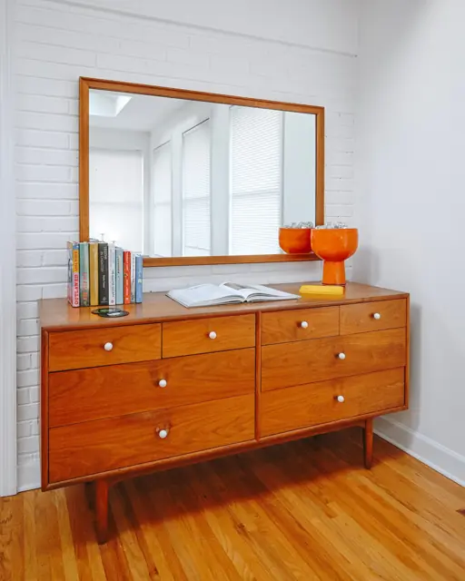
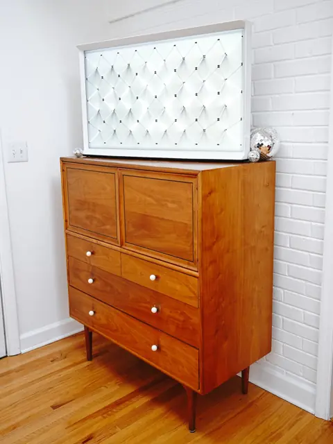
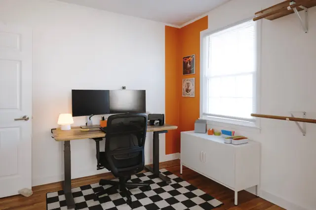
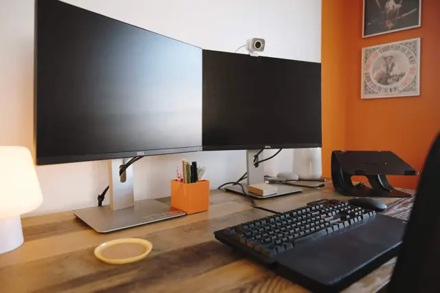
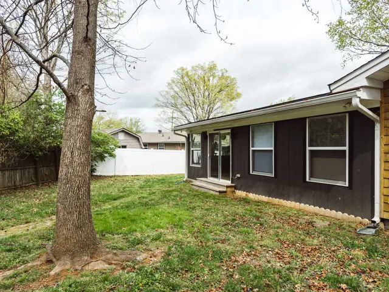

Make yourself at home
The photo tour.
All 32 photos of The Rhinestone Rambler. Choose a photo for a closer look.
← Back to our home















Make yourself at home
All 32 photos of The Rhinestone Rambler. Choose a photo for a closer look.
← Back to our home



